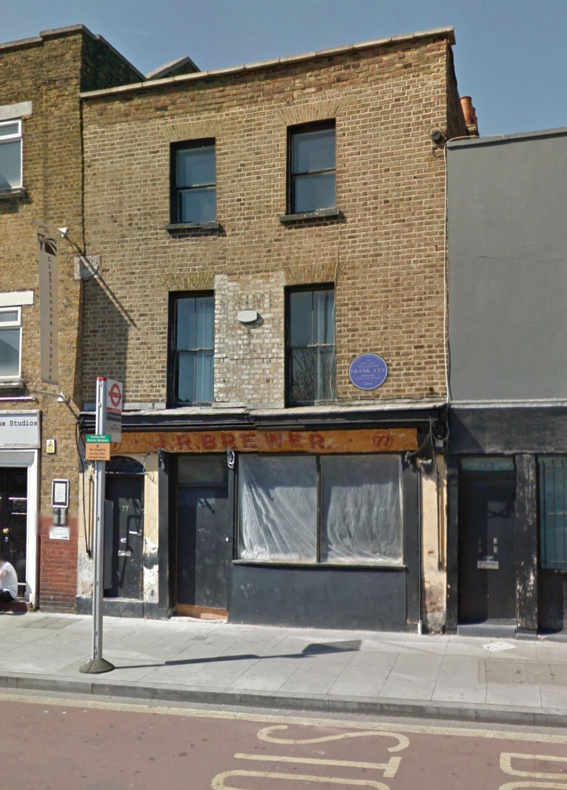
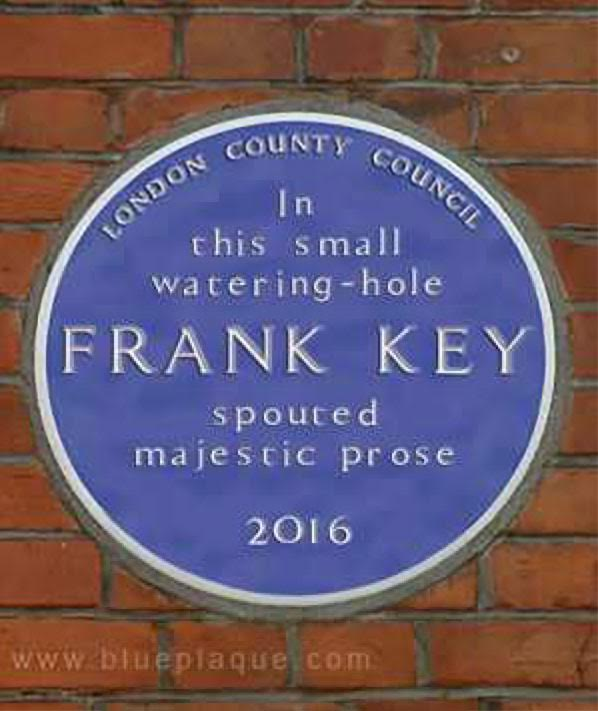

Wednesday, March the 16th, 2016
back to: title, date or indexes
I mentioned my hope that one day a blue plaque would commemorate the site of last week's live appearance at Brewer's Bar. Jonathan Coleclough, who attended that night, has been out and about with his box camera and reports that the plaque is already in place.

